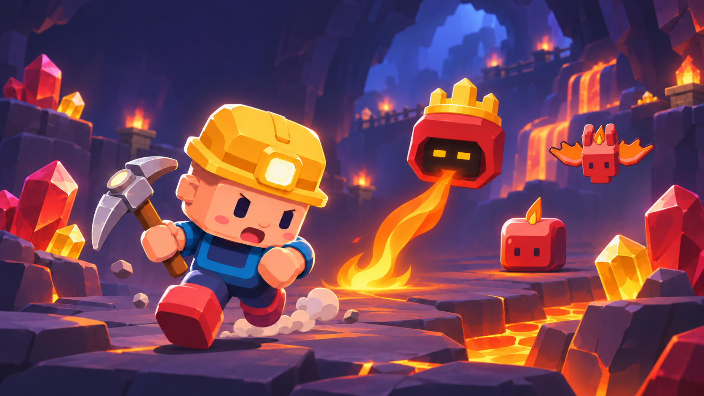
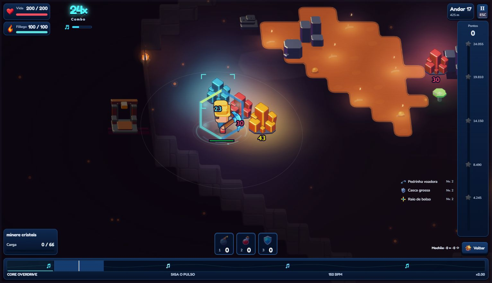
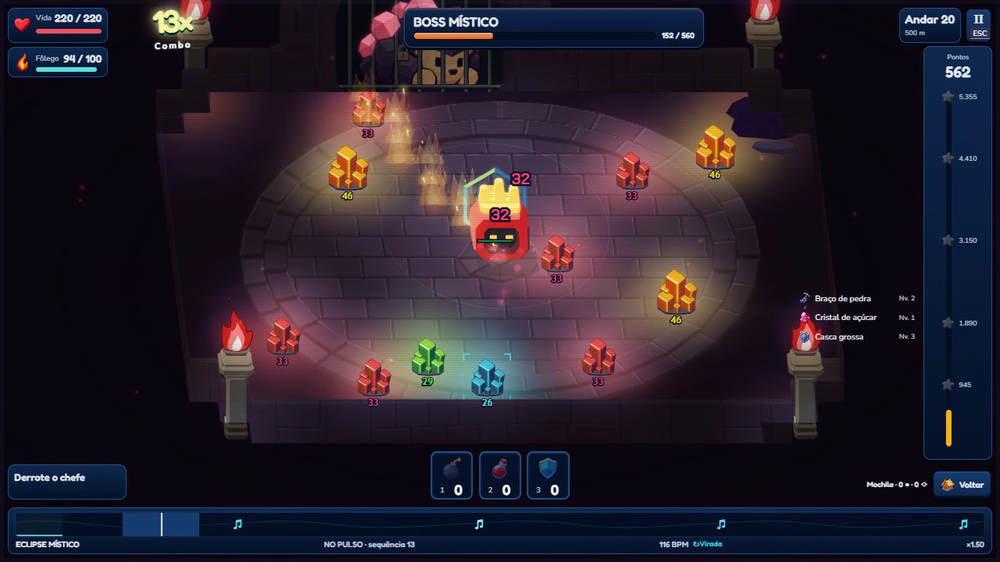
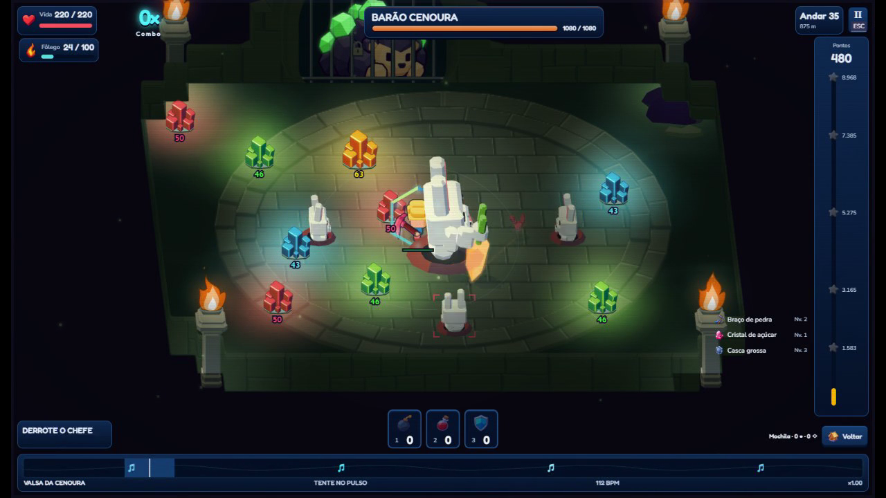
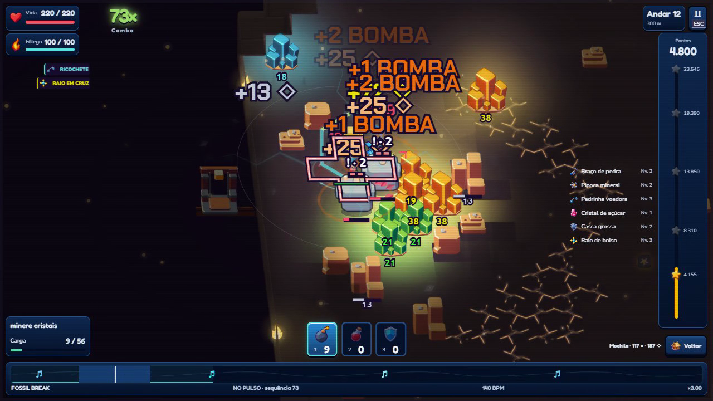
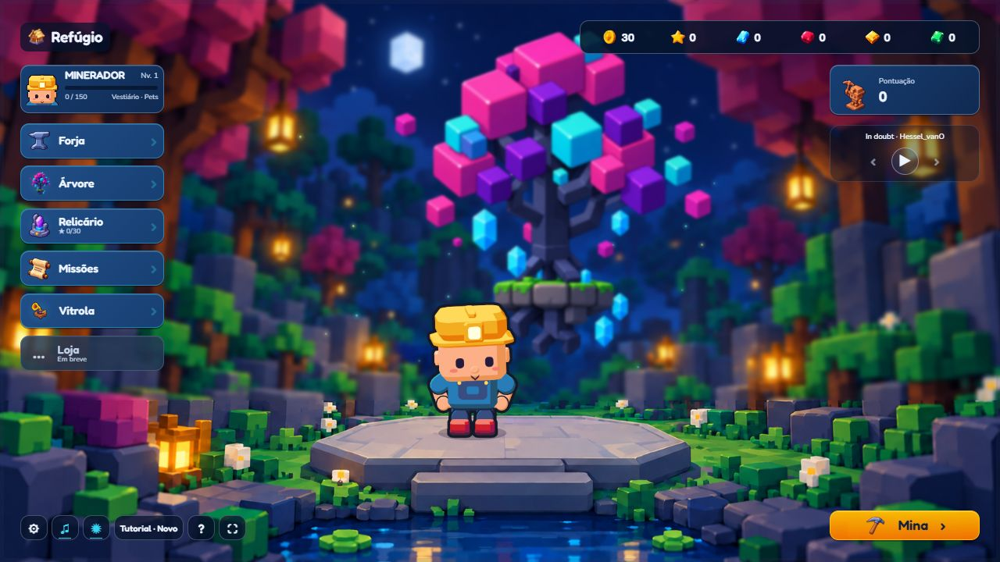

Cavernas e ambientação
Novas salas e arenas, materiais por bioma, líquidos refinados, partículas e fontes locais de luz.


Mineração · Ritmo · Descoberta
Minere no pulso da música, combine poderes e enfrente o que vive nas profundezas. Depois, volte ao refúgio e prepare sua próxima descida.
Explore no seu ritmo
Salas conectadas, passagens e cantos que pedem uma olhada a mais. Cada bioma tem seus materiais, luzes e criaturas — dos cristais frios às fissuras quentes do magma.
As novas cavernas ficaram mais enxutas. A exploração mantém seus caminhos e descobertas, com preparação antecipada do cenário.
Mapas proceduraisLuz por bioma
Leia o ataque. Encontre a abertura.
O Místico deixa rastros de fogo e continua a luta com a cabeça flutuante. A Matriarca estica raízes e alimenta ovos de seiva. O Geodo protege sua coroa; o Barão Cenoura mira suas pancadas e pode acabar acertando os próprios filhotes.



Uma build a cada expedição
Escolha cartas ao descer. Pedrinha voadora, raios em cruz e outros poderes podem trabalhar juntos, enquanto o combo ganha cor, impacto e luz no ritmo da música.
Quer ir além dos andares? O Abismo leva sua build para uma descida contínua, com riscos e decisões próprias.
Uma pausa antes da próxima descoberta
Melhore a picareta e a vida, escolha talentos, pegue uma missão e prepare seu companheiro. Tudo pela interface, sem atravessar uma vila para abrir cada função.

Os dez pets têm habilidades e requisitos de desbloqueio próprios. No vestiário, você também pode trocar as roupas do minerador.
Atualização preparada · 02 de novembro
Novas salas e arenas, materiais por bioma, líquidos refinados, partículas e fontes locais de luz.
Encontros com sinais, animações e oportunidades próprias. Destaque para as miragens e o fogo do Místico.
Picareta e vida ganham mais nos primeiros aprimoramentos, com incrementos menores depois. Custos e limites preservados.
Rotas reaproveitadas, menos trabalho repetido na interface e preparação do cenário em segundo plano, preservando o visual.
O jogo continua crescendo com vocês
Quero saber se os ataques dos chefes ficaram claros, como você sentiu o ritmo e como o jogo rodou no seu computador. Encontrou um problema? Conte o bioma, o navegador e o que estava acontecendo.
Obrigado a todo mundo que jogou e mandou sugestões até aqui.